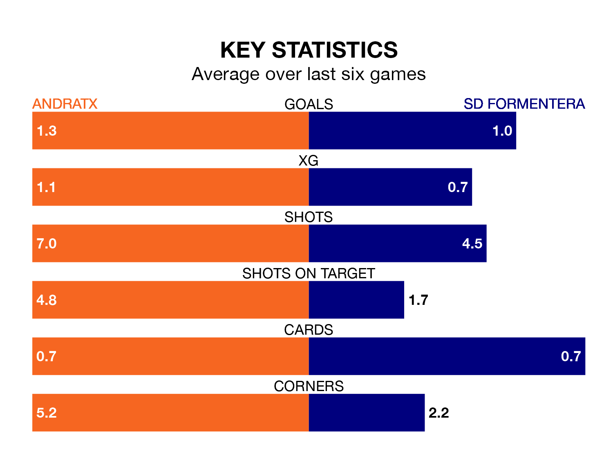

Andratx host SD Formentera on Saturday at the Estadio Sa Plana in the Segunda División RFEF Group 3.
In their last league match, on Sunday, Andratx beat Espanyol B 2-0 away, with their goal scored by Adrián Garrido Martínez.
Formentera also won, 3-1 at home against UE Sant Andreu, with Giuliano Bertino and Jorge Domingo Fernández on the scoresheet.
In the last 10 years, Andratx and Formentera have played each other on seven occasions. Andratx won three of them and Formentera four.
On average, Andratx scored 2.0 goals and Formentera 1.7 in those matches.
Their last meeting was on December 10, when Andratx won 3-2 away.
With 35 goals in 31 games so far this season, Formentera are scoring at below the league average rate with 1.1 goals per game. And they are conceding more than average, letting in 42 goals at a rate of 1.4 per game.
Andratx, meanwhile, are above average scorers, with 1.3 goals per game, compared to a league average of 1.2. They have conceded 1.4 goals per game.
The home side are in mixed form in the Segunda División RFEF Group 3, with three wins and a draw from their last six games.
With a win and two draws over that period, the visitors' form is worse – they have taken five points from 18, compared to Andratx's 10.
Formentera are 13th in the table after 31 games, of which they have won 10 and drawn seven, earning 37 points.
Andratx are four places ahead of Formentera in ninth, with 11 wins and nine draws putting them on 42 points.
Updated: 11:31 (UTC), 15/04/24